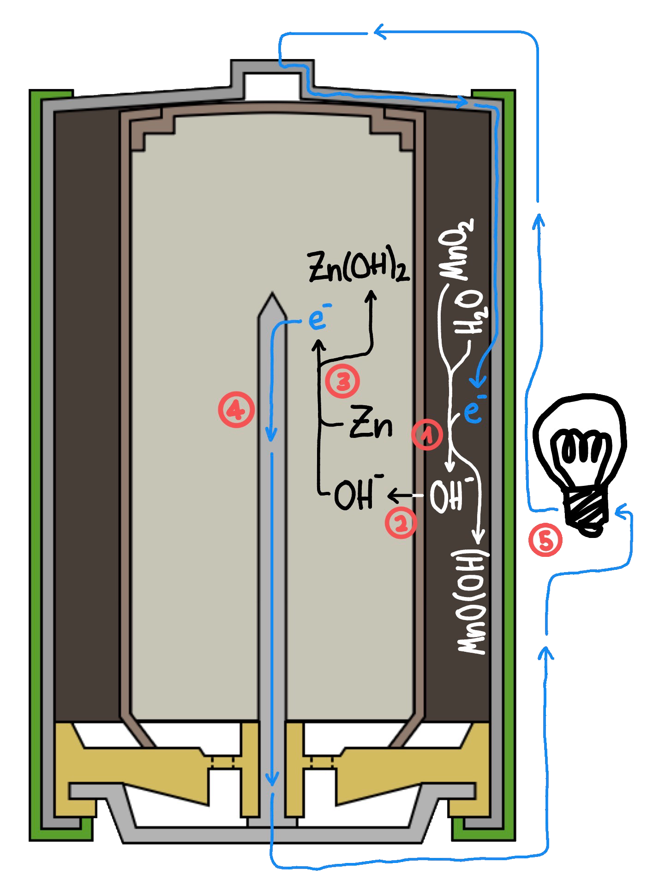

Zink ist ein bläulich-weißes, unedles Metall. Unedel bedeutet, dass es leicht korrodiert, also „rostet“. Anders als zum Beispiel Eisen, das so lange mit Sauerstoff reagiert, bis es komplett durchgerostet ist, bildet sich bei Zink an der Oberfläche eine Schicht aus „Zinkrost“, der das restliche Metall vor weiterer Korrosion schützt. Diese Schicht besteht aus Zinkoxid und Zinkcarbonat und hat die Summenformel Zn5(OH)6(CO3)2. Sie ist so witterungsbeständig, dass man Zink deswegen im Rostschutz einsetzt, zum Beispiel beim Verzinken von Eisen. Zink gehört zu den Übergangsmetallen, hat wegen seiner abgeschlossenen d-Schale aber eher die Eigenschaften von Erdalkalimetallen (Elemente der 2. Hauptgruppe, wie Beryllium oder Magnesium). Man kann sich das so vorstellen, dass sich die Elektronen eines Atoms in verschiedenen Stockwerken eines Hauses (Schalen/Orbitalen) aufhalten. Bei Zink ist der Stock, der zuletzt gefüllt wurde (die sogenannte d-Schale, mit 10 Elektronen), bereits komplett voll. Nur das Stockwerk darüber (die 4s-Schale) enthält Elektronen, die für Reaktionen wirklich zählen, nämlich zwei Stück. Chemisch interessant sind nämlich vor allem unvollständig gefüllte Schalen. Weil bei Zink nur die äußersten zwei Elektronen „sichtbar“ sind, verhält es sich anders als die meisten Übergangsmetalle und ähnelt stattdessen einem Erdalkalimetall. Feines, nicht stabilisiertes Zinkpulver kann sich an der Luft oder bei Kontakt mit Wasser spontan entzünden, man spricht deshalb von einem pyrophoren Feststoff.
Zink
Zink ist ein Metall, welches seit Anbeginn der Menschheit für uns wichtig war. Zusammen mit Kupfer kann man daraus Messing herstellen, welches historisch eine große Rolle spielte. Außerdem ist Zink beispielsweise im Körper Bestandteil von einigen Enzymen und wird in der Industrie zum Rostschutz eingesetzt.
Eigenschaften

Geschichte
Schon vor rund 4,6 Mrd. Jahren gab es Zink in der sogenannten Urwolke, wie Forschende bei der Untersuchung von Meteoriten herausfinden konnten. Auf der Erde nahm Zink historisch vor allem als Bestandteil von Messing eine wichtige Rolle ein. Schon im 4. und 3. (vielleicht sogar seit dem 9.) Jahrhundert vor Christus wurde in Zawar in Nordindien Zinkerz abgebaut. Messing wurde damals noch eher zufällig hergestellt, indem Erze sowohl Kupfer als auch Zink enthielten. Absichtlich wurde die Legierung ab dem 3. Jh. v. Chr. im Nahen Osten erzeugt. Die ersten, die Messing im industriellen Maßstab herstellten, waren die Römer. Sie benutzten es ab 18 v. Chr. für ihre Münzen. Marco Polo (1254-1324) berichtete davon, dass in Persien Zinksulfat (ZnSO4) als Mittel gegen Augenentzündungen verwendet wurde. Noch heute nutzt man die Verbindung in der Medizin, z. B. zur Desinfektion oder zur Wundbehandlung. Ende des 14. Jh. wurde der Zinkabbau in Zawar industriell, bis zum 17. Jh. wurden hier vermutlich zehntausende Tonnen Erz abgebaut. Zink wurde vor allem für religiöse Statuen verwendet, um diese Zeit erkannten die Hindus Zink auch als „achtes Metall“ an.
Gegen Anfang des 17. Jahrhunderts entdeckten auch europäische Wissenschaftler wie Albertus Magnus, Georgius Agricola und Paracelsus die Bedeutung des neuen Metalls, was den Anfang der großflächigen Verwendung von Zink in Europa darstellte. Zwischen dem 17. und 18. Jahrhundert exportierte die Britische Ostindien-Kompanie große Mengen von Zink aus China nach Europa, damals war der Rohstoff noch teuer. Versuche, direkt in Europa Zink herzustellen, scheiterten bis in die 1780er an zu großer Konkurrenz durch diese Importe. 1805 wurde in Belgien das erste Zinkwalzwerk errichtet. Das dort abgebaute Zinkerz wurde an Ort und Stelle verhüttet und zu Tafeln gewalzt. Diese kamen vorzugsweise im Bauwesen zum Einsatz und bewährten sich für Dachdeckungen, Dachentwässerungen und als Bauteile für die Ornamentspenglerei. Da Zinkerze sowohl geologisch als auch geografisch in großem Umfang vorhanden sind, gilt Zink als „Rohstoff mit Zukunft“, den Nachhaltigkeit und Recyclingfähigkeit auszeichnen.

Verwendung
Industriell
Rund 50 % der weltweiten Zinkproduktion werden für den Korrosionsschutz eingesetzt. Dafür stehen zwei Verfahren zur Verfügung: Feuerverzinken und galvanische Prozesse. Beim Feuerverzinken werden Stahlteile in eine flüssige Zinkschmelze getaucht. Vor allem in der Autoindustrie hat sich dieses Verfahren stark durchgesetzt: Karosserien werden dabei als Ganzes durch ein 450 °C heißes Zinkbad gezogen, anschließend rotiert und so rundum vor Rost geschützt. Zink schützt Eisen bzw. Stahl dabei gleich doppelt, nämlich passiv und aktiv.
Passiver Schutz: Die Zinkschicht bildet an der Luft eine abschirmende, bläulich schimmernde Oberfläche aus Zinkoxid und Zinkcarbonat, die wie eine Barriere wirkt und den Oxidationsprozess tieferer Schichten hemmt.
Aktiver Schutz: Ist die Zinkschicht beschädigt, z. B. an Autokarosserien oder Zäunen, greift ein zweiter Mechanismus: das sogenannte Lokalelement. Wichtig dabei: Ein Lokalelement ist keine chemische Verbindung, sondern eine Art Mini-Batterie, die entsteht, wenn zwei unterschiedlich edle Metalle miteinander in Kontakt stehen und gleichzeitig von einem Elektrolyten umgeben sind, zum Beispiel feuchter Luft, Wasser oder Säure. Der Elektrolyt sorgt dafür, dass Ionen zwischen den beiden Metallen wandern können; genau das ist notwendig, damit überhaupt ein Stromfluss entsteht.
Kommt Zink so in Kontakt mit einem edleren Metall (z. B. Kupfer oder Eisen), übernimmt das Zink automatisch die Rolle der Anode (Minuspol) und löst sich auf, während am edleren Metall Wasserstoff entsteht. Das Zink "opfert sich" also selbst und verhindert dadurch, dass der darunterliegende Stahl rostet. Deshalb spricht man auch von einer Opferanode.
Insgesamt hat das Verzinken die automobile Landkarte nachhaltig verändert. Die Alternative zum Feuerverzinken ist das galvanische Verzinken. Dabei wird mithilfe von elektrischem Strom Zink auf Stahlteile abgeschieden. Die entstehenden Schichten sind deutlich dünner als beim Feuerverzinken und eignen sich deshalb nur für Bauteile mit geringerer Korrosionsbelastung, etwa im Innenbereich. Eine Verzinkung minimiert außerdem die Instandhaltungskosten von Metall- und Stahlkonstruktionen. Wie hoch diese Kosten ohne Verzinkung ausfallen können, zeigt der Eiffelturm: Gustave Eiffel kannte sich mit modernen Stahllegierungen noch nicht aus und verwendete deshalb das ihm vertraute Eisen. Die finanziellen Folgen wirken bis heute nach: Der Turm muss alle sieben Jahre mit 60 Tonnen Farbe vor Rost geschützt werden. Dafür brauchen 25 Malerinnen und Maler rund 18 Monate, die Kosten liegen bei jeweils etwa drei Millionen Euro.


Batterietechnik
Zink ist sehr wichtig für Anoden, also negative Elektroden, die Elektronen aufnehmen, in nicht wiederaufladbaren Batterien. Das liegt unter anderem an der verhältnismäßig guten Umweltverträglichkeit und dem niedrigen Preis. Auch elektrochemisch kann Zink überzeugen: In Batterien, die Zink enthalten, sind relativ hohe Spannungen möglich.
Deshalb war Zink schon in den ersten Batterien ein Bestandteil. Über die Jahre haben sich dabei viele verschiedene Arten entwickelt. Das Léclanche-Element ist die erste Batterie, die mit Zink hergestellt wurde. Wir haben eine modernere Variante einer solchen Zelle nachgebaut:
LINK SCHÖNER MACHEN
Außerdem gab es früher noch Quecksilberoxid-Zink-Batterien, diese werden aber wegen der Giftigkeit von Quecksilber nicht mehr genutzt. In bspw. Hörgeräten findet man heute noch Zink-Luft-Batterien. Zink-Kohle- und Zinkchlorid-Zellen waren früher bedeutsam, wurden aber durch die mittlerweile vorherrschende Alkali-Mangan-Batterie (im Bild) weitestgehend verdrängt.

{kind=link}
{kind=link}
{kind=link}
{kind=link}
{kind=link}
So sieht die Reaktion im Inneren einer solchen Alkali-Mangan-Zelle aus:
-
In der Kathode ist der Braunstein vorhanden. Dieser reagiert wie folgt:
Zwei Mangandioxid-Moleküle (Braunstein, \( \ce{MnO2} \)) reagieren mit zwei Wasser-Mölekülen (\( \ce{H2O} \)) und zwei Elektronen (\( \ce{e^-} \)) zu zwei Manganoxidhydroxid (\( \ce{MnO(OH)} \)) und zwei Hydroxid-Ionen (\( \ce{OH^-} \)):
\( \ce{2 MnO2 + 2 H2O + 2e^- →} \) \( \ce{2 MnO(OH) + 2OH^-} \) - Die entstandenen Hydroxid-Ionen (\( \ce{OH^-} \)) wandern durch den hier hellbraunen Seperator in die Anode (hellgrau). Nur die Ionen können hier durch, Elektronen werden von ihm abgehalten, weil er nicht elektrisch leitend ist.
-
In der Anode ist Zink (Zn) als Zinkpulver-Gel vorliegend.
Zusammen mit 2 Hydroxid-Ionen (\( \ce{OH^-} \)) reagiert ein Zink-Atom zu einem Zinkhydroxid-Molekül (\( \ce{Zn(OH)2} \)) und zwei Elektronen (\( \ce{e^-} \)):
\( \ce{Zn + 2 OH^- -> Zn(OH)2 + 2e^-} \) - Die entstandenen Elektronen wandern durch den sogenannten Ableitnagel oder Kollektor und über die Metallplatte, die von außen als Minuspol sichtbar ist, in Richtung Verbraucher. Dafür muss dieser Verbraucher, im Bild die Lampe, natürlich auch irgendwie mit einem elektrischen Leiter mit dem Minus- und Pluspol verbunden sein.
-
Die Elektronen wandern durch den Verbraucher und treiben ihn so an, der Strom fließt und die Lampe leuchtet.
Danach wandern sie weiter über den Pluspol in die Kathode, wo sie die Reaktion aus (1) möglich machen, denn diese benötigt ja Elektronen. Deshalb läuft die Reaktion auch nur ab, wenn der Stromkreis geschlossen ist, sonst könnten keine Elektronen in die Kathode gelangen.
Gesamtreaktion:
\( \ce{Zn + 2 MnO2 + 2 H2O ->} \)
\( \ce{Zn(OH)2 + 2 MnO(OH)} \)
Diese Reaktion findet so in Alkali-Mangan-Batterien statt, ist aber vereinfacht. In Wirklichkeit laufen je nach Entladungsgrad
noch andere Reaktionen in der Batterie ab.

https://commons.wikimedia.org/wiki/File:Schnitt_Alkali-Mn-Batterie.svg" data-license="CC BY-SA 4.0" data-author="Jakob D." data-title="Schematische, vereinfachte Darstellung der Reaktionen in einer Alkali-Mangan-Batterie">{kind=link}
Bedeutung im Körper
Text zur Bedeutung im Körper